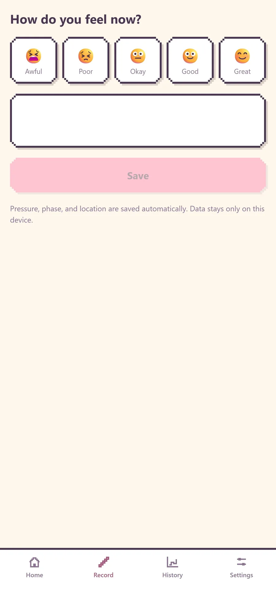
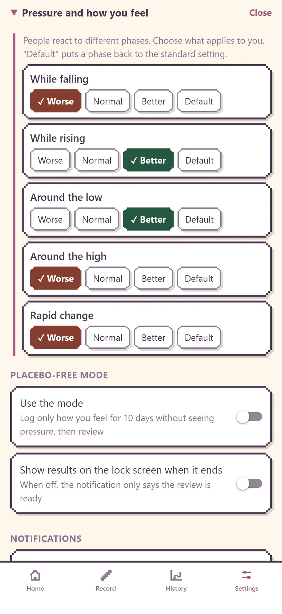

User guide
Screen names match the app. Pressure values are numerical model output from MET Norway — not a weather forecast.
1. About KIATSU
KIATSU lines up the rise and fall of air pressure with your symptom log so you can see which phases tend to affect you. It is not intended to diagnose, treat, or prevent disease.
Uncommon tools: Travel mode (capture pressure changes from the land and from elevators and other up-and-down moves; split weather from height), Placebo-free mode (hide pressure while you log, then compare), and applying your log so notices and the week strip match you. These stay in the free set.
2. First launch

The first screens explain pressure and symptoms, then ask about notices and location. You can use the basic UI without granting permission, but location is required for local pressure and Travel mode.
3. Home

- Current phase (falling, rising, turning, stable) and time to the next turn
- Pressure graph for the next 48 hours (up to 7 days on the annual plan)
- Week strip: seven day cards with marks on days that may be harder
- “Start travel mode” begins a travel recording
During Placebo-free mode, the graph, phases, and marks stay hidden until the mode ends.
4. Record

Choose how you feel, add an optional note, and save. The app attaches pressure context for that moment (hidden during Placebo-free mode).
5. History
Review past pressure and symptom logs by week or month. Open past travel sessions from “Pressure changes due to travel”. The annual plan can export records for a clinician.
6. Travel mode
Record pressure changes from the lay of the land, or elevators and other up-and-down moves. Start from “Start travel mode” on Home. The first start may ask for Always location. Outside Travel mode, location is not collected in the background.
While recording
- Continues with the screen off or in another app
- iOS shows its blue background-location indicator
- Sudden shifts (about 3 hPa in 10 minutes on the default setting) can notify you with a cause hint
- Stops automatically after roughly 30 minutes without movement
Breakdown
The breakdown card separates:
- Height share (with GPS height change)
- Weather share (nearby sea-level pressure movement)
- Horizontal distance (not used to split pressure)
7. Settings

- Subscription (plan, restore, cancel)
- Location
- Pressure and how you feel (phases you chose)
- Placebo-free mode
- Notices
- Display and skins
- Data
8. Annual plan

- Graph and week strip up to 7 days ahead
- A suggested window this week based on the pattern you chose
- Export for sharing with a clinician
Records, notices, the 48-hour view, Travel mode, and Placebo-free mode stay free. Cancel during the 7-day trial and you will not be charged. Manage the subscription under iPhone Settings › your name › Subscriptions, or open the same place from the app.
9. Notices
- Before a phase you chose (1, 3, or 6 hours ahead)
- Sudden shifts during Travel mode (with a cause hint)
- Record reminders during Placebo-free mode (09:00 and 21:00; pressure notices pause)
- When a compare result is ready
10. Compare (Placebo-free mode)
Start from Settings › Placebo-free mode. For 10 days, pressure stays hidden on Home, History, and notices while you log how you feel. Phase settings stay locked during the mode to reduce bias.
- Record reminders at 09:00 and 21:00
- Pressure notices pause
- When finished, open Compare to line up your log with pressure movement
- Clear findings can be applied so notice timing and week-strip marks match you
- If you stop early, Compare uses what you have so far (sparse phases may show “no judgment”)
11. If something is wrong
- No notices — Check system permission and in-app phase/notice settings. Nothing is sent while no chosen phase is ahead. Pressure notices pause in Placebo-free mode.
- Cannot start Travel mode — Check location permission (Always may be required for background recording).
- Annual plan missing — Use Restore purchases with the same Apple ID.
- No records after a phone change — Records stay on device only.
If it still fails, contact Support with your device, OS version, and what happened.
12. Terms
- Phase — falling, rising, turning, stable, and similar states
- Turn — the calculated time when the phase is next expected to change
- Week strip — the seven day cards on Home
- Mark — a symbol on days that may be harder for you
- Breakdown — Travel mode card that separates height and weather shares
- Model value / hPa — MET Norway numerical output, in hectopascals
- Compare — the Placebo-free mode result screen